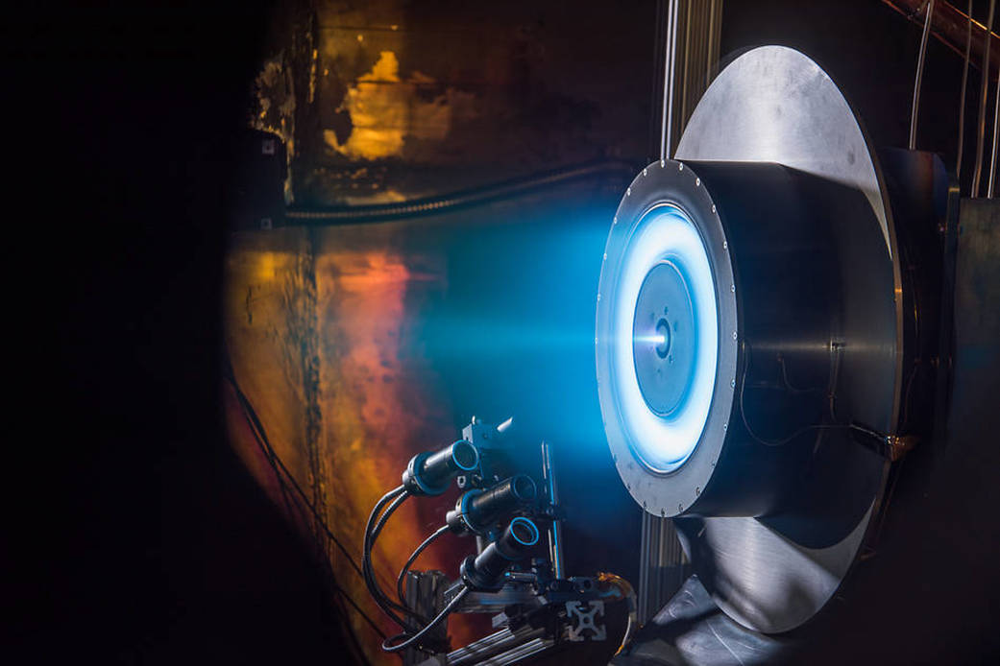

The Hall Effect can trace its name back to Mr. Edwin Herbert Hall, an American scientist who discovered the Hall Effect in 1879.
(1 11)
This is a property that can be applied to electrically conductive material by a magnetic field. When there is current across a conductor in the presence of a magnetic field the moving charges migrate towards the surface of the material. Molecules with the opposite charge, positive or negative, outside the conductor then migrate to the conductor’s surface as a result.
(11)
This is important because Hall Effect Thrusters rely on the fact that a voltage difference is developed in a conductive medium, here the Xenon plasma, in a direction perpendicular to the electric current and the applied magnetic field. The Xenon propellant is then expelled from the discharge chamber of the thruster at high speeds away from the spacecraft.
(12)
The Hall Effect Thruster is a form of Electric Propulsion used to propel objects through space. Ionized Xenon propellant was first used on the Deep Space 1 mission’s ion thruster which launched October 24, 1998. The first Hall Effect Thruster launched in August 2010 on a satellite.
(25)

NASA Glenn 13-Kilowatt Hall Thruster
Electric VS Chemical Propulsion
"Space Exploration is about getting somewhere safely (mission enabling), getting there quickly (reduced transit times), getting a lot of mass there (increased payload mass), and getting there cheaply (lower cost). The simple act of 'getting' there requires the employment of an in-space propulsion system, and the other metrics are modifiers to this fundamental action" (Meyer M, et.al. pp. TA02-1, 2010)
(16)
The debate of electric vs chemical propulsion is a space-based debate. This is because an electric thruster is not capable of delivering enough acceleration to launch a vehicle into space at this point in time.
(16)
The primary reason for this is because all electric thrusters are only able to function in a vacuum, which is the natural state of space itself. A secondary reason is that the amount of force they can apply is roughly equal to what is felt holding a stack of 10 quarters or 1 single tennis-ball which would make the currently impossible ascent difficult.
10 16) (18
As a result all electric propulsion systems are dependent upon chemical propulsion to get them into space.
(18)
Once we are in space however there are several advantages to electric propulsion over chemical propulsion.
First let us compare the steering of spacecraft. On Earth cars can change direction by changing the direction the front wheels are facing. During this change the engine is still causing the wheels to rotate applying force in all directions between the initial and final trajectories that the wheels and therefore the car is facing. In space the rocket engines are just like a car’s engine applies, its force is in the direction that the craft is facing. In space, propulsion thrusters can change the direction they are facing with the use of gimbals. As a result, thrusters like the Hall Effect Thruster, are able to steer the spacecraft by changing the direction the thruster faces much like the wheels on a car.
The comparison of electric and chemical thrusters also concerns a concept of Specific Impulse. Specific Impulse is defined as the provided thrust divided by both the gravitational constant and the propellant mass flow rate.
(17)
Thrust is the force that moves a rocket and so Specific Impulse can be thought of the ratio of the thrust produced to the weight of propellant required to produce the thrust.
Thrust is the force that moves a rocket and so Specific Impulse can be thought of the ratio of force moving an object to the weight of an object over a period of time. Using a standardized period of time in its calculation it becomes possible to compare chemical and electric propulsion forms. One of the main drawbacks of chemical propulsion is that it has relatively low values of Specific Impulse.
(16)
Ion Thrusters, an earlier form of Electric Thruster which Hall Effect Thrusters are related to, have high specific impulses meaning that more thrust is applied per unit weight of the crafts fuel.
(12)
Now, on the topic of comparison of electric vs chemical propulsion first let us consider the solid-propellant based chemical thruster. Solid-propellant thrusters for example are the type of propellant that is used in a model rocket.
(19)
Anyone who has ever launched a model rocket can tell you that once they launch they launch and 'go up' quite fast, but eventually their solid fuel is burnt through, they run out of force propelling them upwards, and they fall back to the earth. Aside from usage within missiles chemical rockets are used as boosters which help move various objects into space.
(19)
Due to their nature the rate of the solid-chemical thruster reaction cannot be altered between its initiation and completion.
One benefit of electric propulsion, which is shared with liquid chemical thrusters, is that they are able to regulate the amount of propellant released with their propellant management systems and therefore the amount of time they are active.
(18)
Because of this they are able to achieve specific final velocities which is beneficial for the undertaking of more complex missions where specific velocities are required in order to achieve particular orbits of celestial bodies. Due to the low amount of generated force of an electric thruster slight adjustments of trajectory are possible which is beneficial to avoid unnecessary collisions in areas where collisions may be common, such as in the Earth's satellite belt or an asteroid belt.
(16 18)
The next aspect between chemical and electric thrusters which we will look at is weight. One example of solid propellant based booster usage is on Space Shuttles, and these boosters are a million pounds in weight.
(20)
As one should know a US Ton is 2,000 lbs which means one single booster rocket on a space shuttle weighs 500 Tons. For perspective, a 2020 Toyota Prius weighs roughly 3,000 lbs or 1.5 Tons.
(21)
This means that each single solid thruster can be though to weigh the same as around 333 Prius. Because of the massive weights that solid thrusters can reach, adding multiples of them to a space-crafts payload to ignite in succession would greatly increase the overall weight of the craft.
Next we consider liquid propelled rockets, these can be one of 2 varieties, mono-propellant and bi-propellant systems. bi-propellant systems differ from mono-propellant systems by containing both a fuel and an oxidizer separately.
(22)
The weight of liquid propellant systems although less than solid propellant systems is still great. In example, a space shuttle orbiter using a bi-propellant system contains roughly 11,000 lbs of MMH fuel alone is carried.
(24)
This single liquid fuel on the orbiter weighs 5.5 US Tons which is significantly less than that of solid-propellant is still sizeable with a weight that can be thought of as roughly 4 Prius cars. In comparison the Xenon propellant used in the ion engine on the Dawn spacecraft only weighed 937 lbs.
(23)
This is roughly 0.5 US Tons, or one third of a Prius car. The Dawn spacecraft operated for over 2,000 days amounting to over 48,000 hours of operation.
(23)
The PSYCHE mission, using Hall Effect Thrusters, will have each of these thrusters operate for roughly a tenth of the time of the Dawn spacecraft, 5,000 hours, and will therefore see a sizeable reduction in fuel from the Dawn spacecraft lowering the weight of fuel weight even further.
Rocketry History Leading To Hall Effect Thrusters
October 28, 1879
English-American Edwin Herbert Hall Discovers the Hall Effect.
1
1906
American Dr. Robert Goddard first examines electric propulsion.
7
1907
As a student at Worcester Polytechnic Institute in Massachusetts Dr. Robert Goddard experiments with gunpowder rockets in the Physics Building basement.
2 3
March 16, 1926
Dr. Robert Goddard tests the first liquid fuel rocket which he constructed at Auburn Massachusetts.
2 3
1932
German Army provides Dr. Wernher von Braun a grant to research chemical rockets resulting in the V2 Rocket WW2. The rocket used liquid oxygen and alcohol propellant.
7
1939
Dr. von Braun's mentor Professor Oberth publishes “Possibilities of Space Flight”.
7
1941
In America the Aircraft Engine Research Laboratory is founded as part of the National Advisory Committee for Aeronautics (NACA).
5
October 1942
First successful V2 rocket launch using liquid propellant by Germany.
6
1945
Dr. von Braun and about 125 other German rocket scientists that surrendered to the US in Bavaria, Germany were sent to Army’s Fort Bliss, Texas to continue rocket research.
6 7
1945
Dr. von Braun asked Ernst Stuhlinger to review Professor Oberth’s work and Stuhlinger becomes immersed in Electric Propulsion later discovering the earlier work of Dr. Goddard.
7
1948
The Aircraft Engine Research Laboratory is renamed the NACA Lewis Flight Propulsion Laboratory after George Lewis.
5
1950
U.S Army moves Braun and Stuhlinger and rest of rocket team to the Redstone Arsenal in Huntsville Alabama.
7
November 23, 1954
NASA Lewis Flight Propulsion Laboratory conducts its first liquid hydrogen-oxygen engine test.
5
1955
Stuhlinger publishes paper on Electric Propulsion arguing for lighter weight electric propulsion.
7
October 4, 1957
The Russians launch Sputnik officially starting the 'Space Age'.
8
January 31, 1958
Explorer 1, America’s First Satellite, is launched with the Jupiter-C Rocket.
7 9
February 6, 1958
U.S. Senate Special Committee on Space and Aeronautics formed with the goal of establishing a U.S. space agency with Senator Johnson as chairman.
8
March 5, 1958
U.S. House of Representatives Select Committee on Aeronautics and Space Exploration formed with John W. McCormack as chairman.
8
April 1958
The Army Ballistic Missile Agency initiates its First Electron Propulsion contract.
7
July 29, 1958
U.S. President Eisenhower signs the National Aeronautics and Space Act into Law. Section 102 of this law outlines the official objectives of NASA.
8
August 19, 1958
Mr. T. Keith Glennan is sworn in at the White House as NASA's first Administrator.
8
NACA Lewis Flight Propulsion Laboratory becomes part of the newly formed NASA and is renamed the Lewis Research Center.
5
1960
The Germans are transferred to NASA forming the core of the newly created Marshall Space Flight Center located in Huntsville Alabama which Dr. von Braun becomes director of.
6 7
1960
Hughes Research laboratory in Malibu California receives contract to develop an ion engine.
7
1961
NASA Lewis Research Center's Electric Propulsion Laboratory Constructed.
5
May 5, 1961
First American Astronaut, Alan Shepard, sent into suborbital flight using the Mercury-Redstone rocket developed at Marshall Space Flight Center.
6
August 1, 1961
NASA awards a contract to the Astro-Electronics division of RCA for flight-testing electric propulsion.
7
September 27, 1961
Hughes research lab at Malibu, California holds a demonstration of an ion engine within a vacuum chamber replicating the conditions of space. Stuhlinger was one of the scientists greeting the attendees.
7
July 20, 1964
The first in-space ion thruster test occurs with the launch of Space Electric Rocket Test I (SERT I).
5 12
Jet Propulsion Lab and NASA Lewis Research Center partner on the NASA Solar Electric Power Technology Application Readiness project (NSTAR) to develop Xenon ion engines for deep space missions.
4 7
June 1996
As part of the NSTAR project a prototype Xenon ion engine built at NASA Lewis Research center begins long-duration test at the Jet Propulsion Lab.
4 7
September 1997
The NSTAR project prototype Xenon ion engine long-duration test ends after successfully logging over 8,000 hours of operation.
4 7
1997
The Ion Propulsion hardware used on the Deep Space 1 mission is designed based on the results of the NSTAR project.
7
October 24, 1998
Deep Space 1 Launched using Ionized Xenon as propellant marking the start of the age of the ion-thruster.
4 7
November 24, 1998
Deep Space 1 Ion Propulsion System comes on-line running for over 200 hours.
4
1999
NASA Lewis Research Center renamed to NASA John H. Glenn Research Center at Lewis Field.
5
August 2010
First Hall Effect Thruster is launched on a satellite.
25